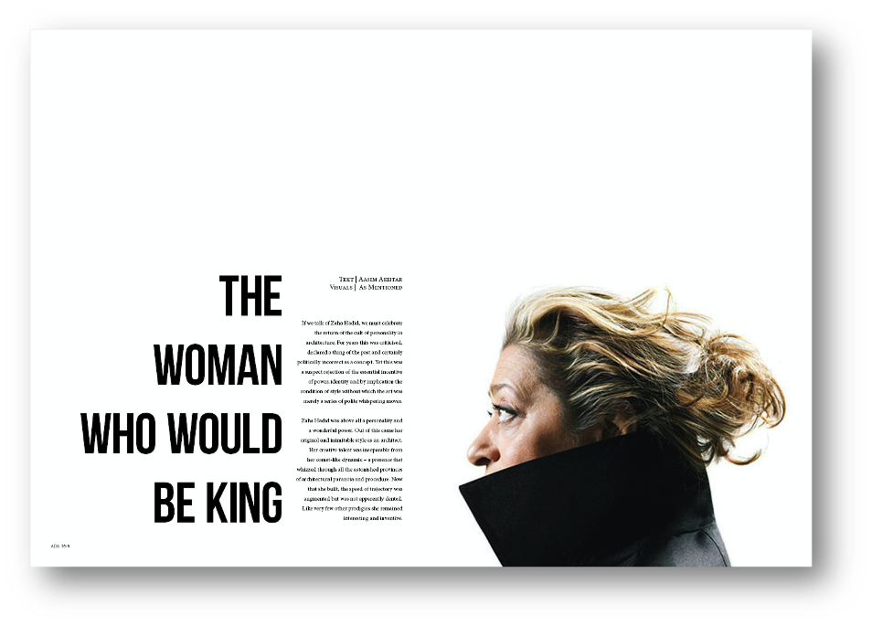
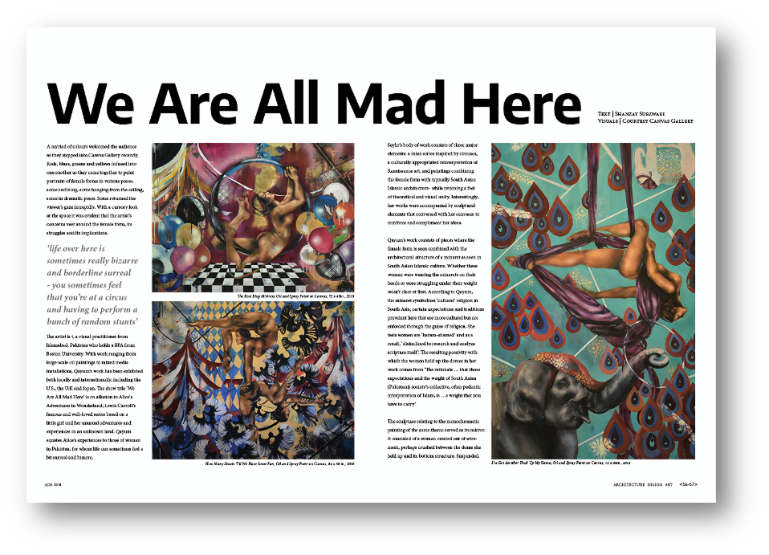
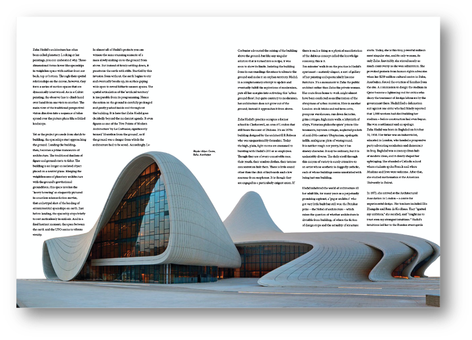
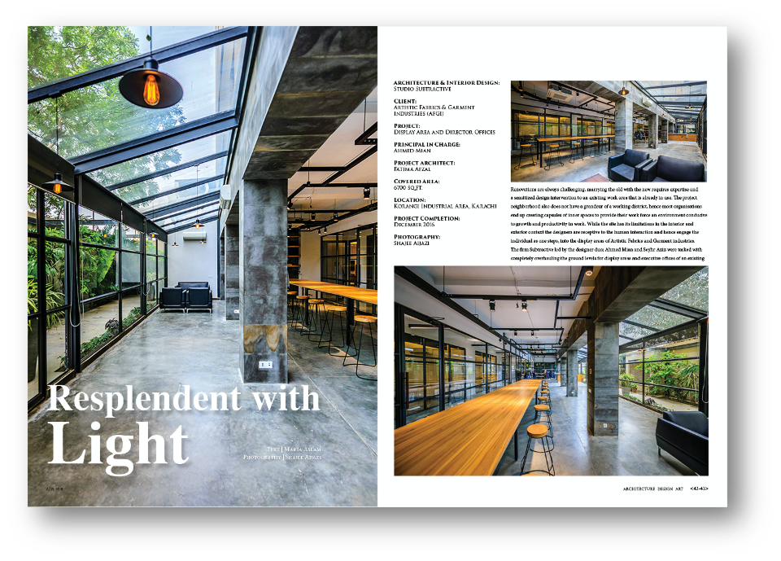
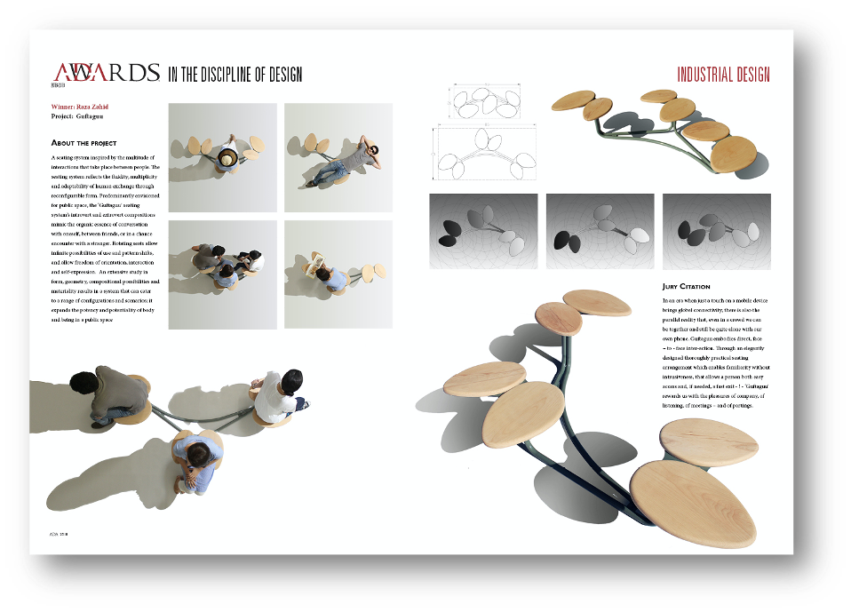
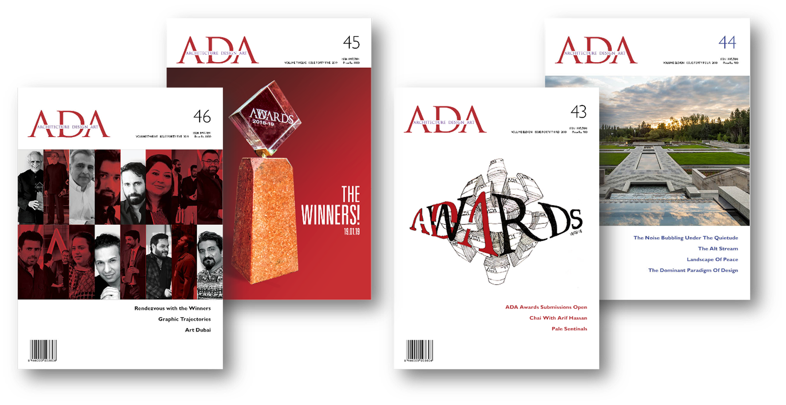

May You Live in Interesting Times
Highlights from the 58th International Venice Biennale and Pakistan Pavilion.
ReadPrint, editorial and event design for an architecture publication
Editorial Design · Print & Digital Layout · Web Design · Art Direction · Typography · Feature Writing & Editing · Event Production · Content Strategy
Company:
Architecture Design Art Magazine
Role:
Lead Designer/ Features Editor
Year:
2018-2020
Team:
Maria Aslam (Editor in Chief) Aisha Khan (Creative Editor)
A magazine on art, design and architecture, needed a consistent visual identity across print, web and live events
As lead designer and features editor I had a number of responsibilities:

Issue 44 | Subject: Zaha Hadid | Published: Dec 2018
Oversaw design, formatting and print production of publication.
Produced collateral and documented the events of Do You Know Your City?, The Future of Heritage with the Aga Khan Trust for Culture, and The ADA Awards.

Issue 43 | Subject: Studio Subtractive | Published: Oct 2018



Issue 43 | Subject: Studio Subtractive | Published: Oct 2018
Commissioned and proof-read articles, programmed content for the period
Highlights from the 58th International Venice Biennale and Pakistan Pavilion.
Read
A dialogue series, featuring presentations by prominent minds in Pakistan’s urban planning and architectural sphere.
See Event Highlights
A two day conference held in collaboration with Aga Khan Trust for Culture, exploring the challenges of heritage in Pakistan.
See Event Highlights
An international competition recognizing excellence in art, design, and architecture and the creative minds behind it.
See Event Highlights8
issues designed.
2
Articles published.
10
Events.

Being both editor and designer meant I shaped content from commissioning to print, so layouts grew out of the writing rather than being applied to it afterwards. Running events alongside the magazine taught me to think about how a publication lives beyond the page. This is where my interest in design and public discourse took root.